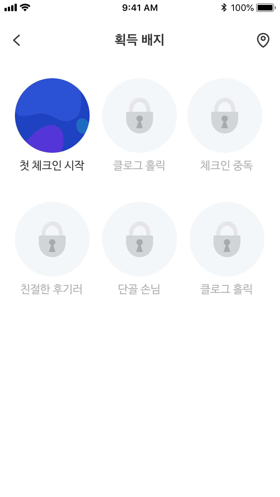

Step 06 · 서비스 플로우
체크인 한 번이 성장 캘린더로 이어지기까지
체크인 → 기록 → 탐색 → 성장 확인 · 전 과정
진입
앱 실행 → 위치 기반 암장 탐지


→
기록
체크인 → 루트·컨디션 기록 → 리뷰


→
탐색
검색 → 클라이밍장 상세 확인


→
성장 확인
캘린더로 기록 누적 → 배지 달성


체크인 1회 평균 소요: 약 30초 — 기록의 시작 비용을 최소화했다